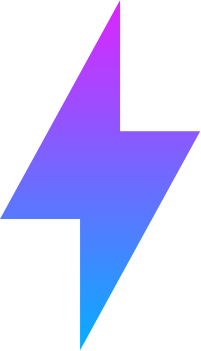
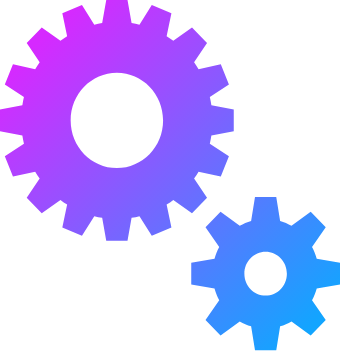

Instead of firing up all WordPress functions, we leveraged on a special WordPress feature to reduce the load on your server and make API calls faster.

QUICK API RESPONSE

EASY SETUP
On the plugin Interface, you can generate an API key for making requests to the EndPoint, as well as configure parameters needed for the request.
SECURED ENDPOINT
API Endpoint is secured with an X-API-Key Authorization Header. This means that you need an API Key to make a request to the EndPoint.
I want to integrate my WordPress posts into my static
site
Download this plugin now and Enjoy a Free Virtual API for your WordPress posts.
Download NowHOW TO USE
- Download & install the plugin from the WordPress plugins directory.
- Head over to the "Configuration Page" and generate an API key for your EndPoint.
- Still on the configuration page, configure the API parameters such as the number of posts to retrieve, the categories to select the post from, etc. Then save the configuration.
- Now the EndPoint is ready to be
used.
https://YOUR_WORDPRESS_DOMAIN/posts-api-wp/
Just replace "YOUR_WORDPRESS_DOMAIN" with your wordpress installation path. - Now send a GET request to the EndPoint and include the header below for authentication.
X-API-Key: YOUR_API_KEY
Make sure the API Key is the recent one which you generated on the configuration page. - The EndPoint URL will respond quickly with a JSON object containing your posts or it will respond with a JSON object containing a message if the request failed.
- In the case of a failed request, visit the "HOW TO USE" page for help with debugging the error or you submit an issue for us to look at it.